Effizienz
Bei der Diskussion von Effizienz müssen wir zwischen der Laufzeit eines Algorithmus auf einem bestimmten System und seiner prinzipiellen Leistungsfähigkeit (Algorithmenkomplexität) unterscheiden. Der Benutzer ist natürlich vor allem an der Laufzeit interessiert, denn diese bestimmt letztendlich seine Arbeitsproduktivität. Ein Softwaredesigner hingegen muss eine Implementation wählen, die auf verschiedenen Systemen und in verschiedenen Anwendungen schnell ist. Für ihn sind daher auch Aussagen zur Algorithmenkomplexität sehr wichtig, um den am besten geeigneten Algorithmus auszuwählen.
Contents
- 1 Laufzeit
- 2 Algorithmen-Komplexität
- 3 Landau-Symbole
- 4 Komplexitätsvergleich zweier Algorithmen
- 5 Amortisierte Komplexität
Laufzeit
Aus Anwendersicht ist ein Algorithmus effizient, wenn er die in der Spezifikation verlangten Laufzeitgrenzen einhält. Ein Algorithmus muss also nicht immer so schnell wie möglich sein, sondern so schnell wie nötig. Dies führt in verschiedenen Anwendungen zu ganz unterschiedliche Laufzeitanforderungen:
- Berechnen des nächsten Steuerkommandos für eine Maschine: ca. 1/1000s
- Berechnen des nächsten Bildes für eine Videopräsentation (z.B. Dekompression von MPEG-kodierten Bildern): ca. 1/25s
- Geringere Bildraten führen zu ruckeligen Filmen.
- Sichtbare Antwort auf ein interaktives Kommando (z.B. Mausklick): ca. 1/2s
- Wird diese Antwortzeit überschritten, vermuten viele Benutzer, dass der Mausklick nicht funktioniert hat, und klicken nochmals, mit eventuell fatalen Folgen. Wenn ein Algorithmus notwendigerweise länger dauert als 1/2s, sollte ein Fortschrittsbalken angezeigt werden.
- Wettervorhersage: muss spätestens am Vorabend des vorhergesagten Tages beendet sein
Laufzeitvergleich
Da die Laufzeit für den Benutzer ein so wichtiges Kriterium ist, werden häufig Laufzeitvergleiche durchgeführt. Deren Ergebnisse hängen allerdings von vielen Faktoren ab, die möglicherweise nicht kontrollierbar sind:
- Geschwindigkeit und Anzahl der Prozessoren
- Auslastung des Systems
- Größe des Hauptspeichers und Cache, Geschwindigkeit des Datenbus
- Qualität des Compilers/Optimierers (ist der Compiler für die spezielle Prozessor-Architektur optimiert?)
- Geschick des Programmierers
- Daten (Beispiel Quicksort: Best case und worst case [vorsortierter Input] stark unterschiedlich)
All diese Faktoren sind untereinander abhängig. Laufzeitvergleiche sind daher mit Vorsicht zu interpretieren. Generell sollten bei Vergleichen möglichst wenige Parameter verändert werden, z.B.
- gleiches Programm (gleiche Kompilierung), gleiche Daten, andere Prozessoren
oder
- gleiche CPU, Daten, andere Programme (Vergleich von Algorithmen)
Zur Verbesserung der Vergleichbarkeit gibt es standardisierte Benchmarks, die bestimmte Aspekte eines Systems unter möglichst realitätsnahen Bedingungen testen. Generell gilt aber: Durch Laufzeitmessung ist schwer festzustellen, ob ein Algorithmus prinzipiell besser ist als ein anderer. Dafür ist die Analyse der Algorithmenkomplexität notwendig.
Optimierung der Laufzeit
Wenn sich herausstellt, dass ein bereits implementierter Algorithmus zu langsam läuft, geht man wie folgt vor:
- Man verwendet einen Profiler, um zunächst den Flaschenhals zu bestimmen. Ein Profiler ist ein Hilfsprogramm, das während der Ausführung eines Programms misst, wieviel Zeit in jeder Funktion und Unterfunktion verbraucht wird. Dadurch kann man herausfinden, welcher Teil des Algorithmus überhaupt Probleme bereitet. Donald Knuth gibt z.B. als Erfahrungswert an, dass Programme während des größten Teils ihrer Laufzeit nur 3% des Quellcodes (natürlich mehrmals wiederholt) ausführen [1]. Es ist sehr wichtig, diese 3% experimentell zu bestimmen, weil die Erfahrung zeigt, dass man beim Erraten der kritischen Programmteile oft falsch liegt. Man spricht dann von "premature optimization", also von voreiliger Optimierung ohne experimentelle Untersuchung der wirklichen Laufzeiten, was laut Knuth "the root of all evil" ist. Der Python-Profiler wird in Kapitel 25 der Python-Dokumentation beschrieben.
- Man kann dann versuchen, die kritischen Programmteile zu optimieren.
- Falls der Laufzeitgewinn durch Optimierung zu gering ist, muss man einen prinzipiell schnelleren Algorithmus verwenden, falls es einen gibt.
Einige wichtige Techniken der Programmoptimierung sollen hier erwähnt werden. Wenn man einen optimierenden Compiler verwendet, werden einige Optimierungen automatisch ausgeführt [2]. In Python trifft dies jedoch nicht zu. Um den Sinn einiger Optimierungen zu verstehen, benötigt man Grundkenntnisse der Computerarchitektur.
- Elimination von redundantem Code
- Es ist offensichtlich überflüssig, dasselbe Ergebnis mehrmals zu berechnen, wenn es auch zwischengespeichert werden könnte. Diese Optimierung wird von vielen automatischen Optimierern unterstützt und kommt im wesentlichen in zwei Ausprägungen vor:
- common subexpression elimination
- In mathematischen Ausdrücken wird ein Teilergebnis häufig mehrmals benötigt. Man betrachte z.B. die Lösung der quadratischen Gleichung
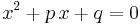
:
x1 = - p / 2.0 + sqrt(p*p/4.0 - q)
x2 = - p / 2.0 - sqrt(p*p/4.0 - q)
- Die mehrmalige Berechnung von Teilausdrücken wird vermieden, wenn man stattdessen schreibt:
p2 = - p / 2.0
r = sqrt(p2*p2 - q)
x1 = p2 + r
x2 = p2 - r
- loop invariant elimination
- Wenn ein Teilausdruck sich in einer Schleife nicht ändert, muss man ihn nicht bei jedem Schleifendurchlauf neu berechnen, sondern kann dies einmal vor Beginn der Schleife tun. Ein typisches Beispiel hierfür ist die Adressierung von Matrizen, die als 1-dimensionales Array gespeichert sind. Angenommen, wir speichern eine NxN Matrix m in einem Array a der Größe N2, so dass das Matrixelement mij durch a[i + j*N] indexiert wird. Wir betrachten die Aufgabe, eine Einheitsmatrix zu initialisieren. Ein nicht optimierter Algorithmus dafür lautet:
for j in range(N):
for i in range(N):
if i == j:
a[i + j*N] = 1.0
else:
a[i + j*N] = 0.0
- Der Ausdruck j*N wird hier in jedem Schleifendurchlauf erneut berechnet, obwohl sich j in der inneren Schleife gar nicht verändert. Man kann deshalb optimieren zu:
for j in range(N):
jN = j*N
for i in range(N):
if i == j:
a[i + jN] = 1.0
else:
a[i + jN] = 0.0
- Vereinfachung der inneren Schleife
- Generell sollte man sich bei der Optimierung auf die innere Schleife eines Algorithmus konzentrieren, weil dieser Code am häufigsten ausgeführt wird. Insbesondere sollte man die Anzahl der Befehle in der inneren Schleife so gering wie möglich halten und teure Befehle vermeiden. Früher waren vor allem Floating-Point Befehle teuer, die man oft durch die schnellere Integer-Arithmetik ersetzt hat, falls dies algorithmisch möglich war (diesen Rat findet man noch oft in der Literatur). Heute hat sich die Hardware so verbessert, dass im Allgemeinen nur noch die Floating-Point Division deutlich langsamer ist als die anderen Operatoren. Im obigen Beispiel der quadratischen Gleichung ist es daher sinnvoll, den Ausdruck
p2 = -p / 2.0
- durch
p2 = -0.5 * p
- zu ersetzen. Dadurch ersetzt man eine Division durch eine Multiplikation und spart außerdem das Negieren von p, da der Compiler direkt mit -0.5 multipliziert.
- Ausnutzung der Prozessor-Pipeline
- Moderne Prozessoren führen mehrere Befehle parallel aus. Dies ist möglich, weil jeder Befehl in mehrere Teilschritte zerlegt werden kann. Eine generische Unterteilung in vier Teilschritte ist z.B.:
- Dekodieren des nächsten Befehls
- Beschaffen der Daten, die der Befehl verwendet (aus Prozessorregistern, dem Cache, oder dem Hauptspeicher)
- Ausführen des Befehls
- Schreiben der Ergebnisse
- Man bezeichnet dies als die "instruction pipeline" des Prozessors (heutige Prozessoren verwenden wesentlich feinere Unterteilungen). Prozessoren werden nun so gebaut, dass mehrere Befehle parallel, auf verschiedenen Ausführungsstufen ausgeführt werden. Wenn Befehl 1 also beim Schreiben der Ergebnisse angelangt ist, kann Befehl 2 die Hardware zum Ausführen des Befehls benutzen, während Befehl 3 seine Daten holt, und Befehl 4 soeben dekodiert wird. Unter bestimmten Bedingungen funktioniert diese Parallelverarbeitung jedoch nicht. Dies gibt Anlass zu Optimierungen:
- Vermeiden unnötiger Typkonvertierungen
- Der Prozessor verarbeitet Integer- und Floating-Point-Befehle in verschiedenen Pipelines, weil die Hardwareanforderungen sehr verschieden sind. Wird jetzt ein Ergebnis von Integer nach Floating-Point umgewandelt oder umgekehrt, muss die jeweils andere Pipeline warten, bis die erste Pipeline ihre Berechnung beendet. Es kann dann besser sein, Berechnungen in Floating-Point zu Ende zu führen, auch wenn sie semantisch eigentlich Integer-Berechnungen sind.
- Reduzierung der Anzahl von Verzweigungen
- Wenn der Code verzweigt (z.B. durch eine if- oder while-Anweisung), ist nicht klar, welcher Befehl nach der Verzweigung ausgeführt werden soll, bevor Stufe 3 der Pipeline die Verzweigungsbedingung ausgewertet hat. Bis dahin wären die ersten beiden Stufen der Pipeline unbenutzt. Moderne Prozessoren benutzen zwar ausgefeilte Heuristiken, um das Ergebnis der Bedingung vorherzusagen, und führen den hoffentlich richtigen Zweig des Codes spekulativ aus, aber dies funktioniert nicht immer. Man sollte deshalb generell die Anzahl der Verzweigungen minimieren. Als Nebeneffekt führt dies meist auch zu besser lesbarem, verständlicherem Code. Im Matrixbeispiel kann man
for j in range(N):
jN = j*N
for i in range(N):
if i == j:
a[i + jN] = 1.0
else:
a[i + jN] = 0.0
- durch
for j in range(N):
jN = j*N
for i in range(N):
a[i + jN] = 0.0
a[j + jN] = 1.0
ersetzen. Die Diagonalelemente a[j + jN] werden jetzt zwar zweimal initialisiert (in der Schleife auf Null, dann auf Eins), aber durch Elimination der if-Abfrage wird dies wahrscheinlich mehr als ausgeglichen, zumal dadurch die innere Schleife wesentlich vereinfacht wurde.
- Ausnutzen des Prozessor-Cache
- Zugriffe auf den Hauptspeicher sind sehr langsam. Deshalb werden stets ganze Speicherseiten auf einmal in den Cache des Prozessors geladen. Wenn unmittelbar nacheinander benutzte Daten auch im Speicher nahe beieinander liegen (sogenannte "locality of reference"), ist die Wahrscheinlichkeit groß, dass die als nächstes benötigten Daten bereits im Cache sind und damit schnell gelesen werden können. Bei vielen Algorithmen kann man die Implementation so umordnen, dass die locality of reference verbessert wird, was zu einer drastischen Beschleunigung führt. Im Matrix-Beispiel ist z.B. die Reihenfolge der Schleifen wichtig. Für konstanten Index j liegen die Indizes i im Speicher hintereinander. Deshalb ist es günstig, in der inneren Schleife über i zu iterieren:
for j in range(N):
jN = j*N
for i in range(N):
a[i + jN] = 0.0
a[j + jN] = 1.0
- Die umgekehrte Reihenfolge der Schleifen ist hingegen ungünstig
for i in range(N):
for j in range(N):
a[i + j*N] = 0.0
a[i + i*N] = 1.0
- Jetzt werden in der inneren Schleife stets N Datenelemente übersprungen. Besonders bei großem N muss man daher häufig den Cache neu füllen, was bei der ersten Implementation nicht notwendig war. (Außerdem verliert man hier die Optimierung jN = j*N, die jetzt nicht mehr möglich ist.)
Code aus kompilierten Sprachen wie C/C++ Als Faustregel kann man durch Optimierung eine Verdoppelung der Geschwindigkeit erreichen (in Ausnahmefällen auch mehr). Benötigt man stärkere Verbesserungen, muss man wohl oder übel einen besseren Algorithmus oder einen schnelleren Computer verwenden.
Algorithmen-Komplexität
Komplexitätsbetrachtungen ermöglichen den Vergleich der prinzipiellen Eigenschaften von Algorithmen unabhängig von einer Implementation, Umgebung etc.
Eine einfache Möglichkeit ist das Zählen der Aufrufe einer Schlüsseloperation. Beispiel Sortieren:
- Anzahl der Vergleiche
- Anzahl der Vertauschungen
Beispiel: Selection Sort
for i in range(len(a)-1):
min = i
for j in range(i+1, len(a)):
if a[j] < a[min]:
min = j
a[min], a[i] = a[i], a[min] # swap
- Anzahl der Vergleiche: Ein Vergleich in jedem Durchlauf der inneren Schleife. Es ergibt sich folgende Komplexität:
- Ingesamt
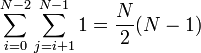
Vergleiche.
- Ingesamt
- Anzahl der Vertauschungen (swaps): Eine Vertauschung pro Durchlauf der äußeren Schleife:
- Insgesamt
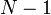
Vertauschungen
- Insgesamt
Die Komplexität wird durch die Operationen bestimmt, die am häufigsten ausgeführt werden, hier also die Anzahl der Vergleiche. Die Anzahl der Vertauschungen ist hingegen kein geeignetes Kriterium für die Komplexität von selection sort, weil der Aufwand in der inneren Schleife ignoriert würde.
Fallunterscheidung: Worst und Average Case
Die Komplexität ist in der Regel eine Funktion der Eingabegröße (Anzahl der Eingabebits, Anzahl der Eingabeelemente). Sie kann aber auch von der Art der Daten abhängen, nicht nur von der Menge, z.B. vorsortierte Daten bei Quicksort. Um von der Art der Daten unabhängig zu werden, kann man zwei Fälle der Komplexität unterscheiden:
- Komplexität im ungünstigsten Fall
- Der ungünstigste Fall ist die Eingabe gegebener Länge, für die der Algorithmus am langsamsten ist. Der Nachteil dieser Methode besteht darin, dass dieser ungünstige Fall in der Praxis vielleicht gar nicht oder nur selten vorkommt, so dass sich der Algorithmus in Wirklichkeit besser verhält als man nach dieser Analyse erwarten würde. Beim Quicksort-Algorithmus mit zufälliger Wahl des Pivot-Elements müsste z.B. stets das kleinste oder größte Element des aktuellen Intervalls als Pivot-Element gewählt werden, was äußerst unwahrscheinlich ist.
- Komplexität im durchschnittlichen/typischen Fall
- Der typische Fall ist die mittlere Komplexität des Algorithmus über alle möglichen Eingaben. Dazu muss man die Wahrscheinlichkeit jeder möglichen Eingabe kennen, und berechnet dann die mittlere Laufzeit über dieser Wahrscheinlichkeitsverteilung. Leider ist die Wahrscheinlichkeit der Eingaben oft nicht bekannt, so dass man geeignete Annahmen treffen muss. Bei Sortieralgorithmen können z.B. alle möglichen Permutationen des Eingabearrays als gleich wahrscheinlich angenommen werden, und der typische Fall ist dann die mittlere Komplexität über alle diese Eingaben. Oft hat man jedoch in der Praxis andere Wahrscheinlichkeitsverteilungen, z.B. sind die Daten oft "fast sortiert" (nur wenige Elemente sind an der falschen Stelle). Dann verhält sich der Algorithmus ebenfalls anders als vorhergesagt.
Wir beschränken uns in dieser Vorlesung auf die Komplexität im ungünstigseten Fall. Exakte Formeln für Komplexität sind aber auch dann schwer zu gewinnen, wie das folgende Beispiel zeigt:
Beispiele aus den Übungen (Gemessene Laufzeiten für Mergesort/Selectionsort)
- Mergesort:
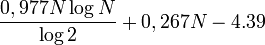
- andere Lösung:
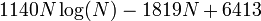
- andere Lösung:
- Selectionsort:
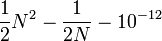
- andere Lösung:
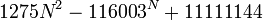
- andere Lösung:
Aus diesen Formeln wird nicht offensichtlich, welcher Algorithmus besser ist. Näherung: Betrachte nur sehr große Eingaben (meist sind alle Algorithmen schnell genug für kleine Eingaben). Dieses Vorgehen wird als Asymptotische Komplexität bezeichnet (N gegen unendlich).
Asymptotische Komplexität am Beispiel Polynom
Polynom:
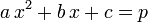
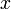
sei die Eingabegröße, und wir betrachten die Entwicklung von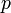
in Abhängigkeit von .-
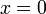
-
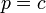
-
-
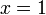
-
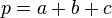
-
-
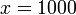
-
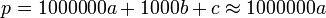
-
-
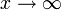
-
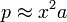
-
Für sehr große Eingaben verlieren also b und c immer mehr an Bedeutung, so dass am Ende nur noch a für die Komplexitätsbetrachtung wichtig ist.
Landau-Symbole
Um die asymptotische Komplexität verschiedener Algorithmen miteinander vergleichen zu können, verwendet man die sogenannten Landau-Symbole. Das wichtigste Landau-Symbol ist
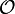
, mit dem man eine obere Schranke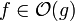
für die Komplexität angeben kann.Schreibt man
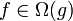
, so stellt dies eine asymptotische untere Schranke für die Funktion f dar.Schließlich bedeutet
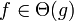
, dass die Funktion f genauso schnell wie die Funktion g wächst, das heißt man hat eine asymptotisch scharfe Schranke für f. Hierzu muss sowohl als auch erfüllt sein.Im nun folgenden soll auf die verschiedenen Landau-Symbole noch näher eingegeangen werden.
O-Notation
Intuitiv gilt: Für große N dominieren die am schnellsten wachsenden Terme einer Funktion. Die Notation (sprich "f ist in O von g" oder "f ist von derselben Größenordnung wie g") formalisiert eine solche Abschätzung der asymptotischen Komplexität der Funktion f von oben.
- Asymptotische Komplexität
- Für zwei Funktionen f(x) und g(x) gilt
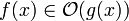
- genau dann wenn es eine Konstante
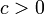
und ein Argument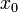
gibt, so dass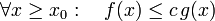
.
- Die Menge
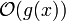
aller durch g(x) abschätzbaren Funktionen ist also formal definiert durch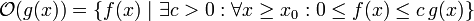
Die Idee hinter dieser Definition ist, dass g(x) eine wesentlich einfachere Funktion ist als f(x), die sich aber nach geeigneter Skalierung (Multiplikation mit c) und für große Argumente x im wesentlichen genauso wie f(x) verhält. Man kann deshalb in der Algorithmenanalyse f(x) durch g(x) ersetzen. spielt für Funktionen eine ähnliche Rolle wie der Operator ≤ für Zahlen: Falls a ≤ b gilt, kann bei einer Abschätzung von oben ebenfalls a durch b ersetzt werden.
Ein einfaches Beispiel
Rot =
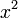
Blau =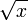
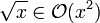
weil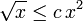
für alle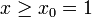
und , oder auch für
, oder auch für 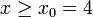
und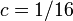
(die Wahl von c und x0 in der Definition von O(.) ist beliebig, solange die Bedingungen erfüllt sind).Komplexität bei kleinen Eingaben
Algorithmus 1:
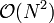
Algorithmus 2:
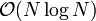
Algorithmus 2 ist schneller (von geringerer Komplexität) für große Eingaben, aber bei kleinen Eingaben (insbesondere, wenn der Algorithmus in einer Schleife immer wieder mit kleinen Eingaben aufgerufen wird) könnte Algorithmus 1 schneller sein, falls der in der -Notation verborgene konstante Faktor c bei Algorithmus 2 einen wesentlich größeren Wert hat als bei Algorithmus 1.
Eigenschaften der O-Notation (Rechenregeln)
- Transitiv:
-
- Additiv:
-
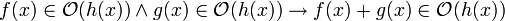
-
- Für Monome gilt:
-
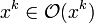
und -
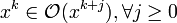
-
- Multiplikation mit einer Konstanten:
-
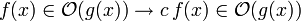
- andere Schreibweise:
-
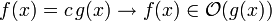
-
- Folgerung aus 3. und 4. für Polynome:
-
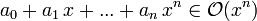
- Beispiel:
-
- Logarithmus:
-
-
- Die Basis des Logarithmus spielt also keine Rolle.
- Beweis hierfür:
-
- Mit
gilt:
.
- Wird hier die (zweite) Regel für Multiplikation mit einer Konstanten angewendet, fällt der konstante Faktor weg, also
.
-
- Insbesondere gilt auch
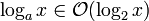
, es kann also immer der 2er Logarithmus verwendet werden.
-
O-Kalkül
Das O-Kalkül definiert wichtige Vereinfachungsregeln for Ausdrücke in O-Notation (Beweise: siehe Übungsaufgabe):
-
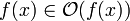
-
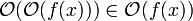
-
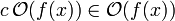
für jede Konstante c -
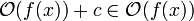
für jede Konstante c - Sequenzregel:
- Wenn zwei nacheinander ausgeführte Programmteile die Komplexität
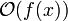
bzw. haben, gilt für beide gemeinsam: - falls bzw.
- falls .
- Informell schreibt man auch: .
- Wenn zwei nacheinander ausgeführte Programmteile die Komplexität
- Schachtelungsregel bzw. Aufrufregel:
- Wenn in einer geschachtelten Schleife die äußere Schleife die Komplexität hat, und die innere , gilt für beide gemeinsam:
- .
- Gleiches gilt wenn eine Funktion -mal aufgerufen wird, und die Komplexität der Funktion selbst ist.
- Beispiel für 5.
- Beide Schleifen haben die Komplexität
 . Dies gilt auch für ihre Hintereinanderausführung:
. Dies gilt auch für ihre Hintereinanderausführung:
for i in range(N):
a[i] = i
for i in range(N):
print a[i]
- Beispiele für 6.
- Beide Schleifen haben die Komplexität . Ihre Verschachtelung hat daher die Komplexität .
for i in range(N):
for j in range(N):
a[i*N + j] = i+j
- Dies gilt ebenso, wenn statt der inneren Schleife eine Funktion mit Komplexität ausgeführt wird:
for i in range(N):
a[i] = foo(i, N) #
O-Kalkül auf das Beispiel des Selectionsort angewandt
Selectionsort: Wir hatten gezeigt dass . Nach der Regel für Polynome vereinfacht sich dies zu .
Alternativ via Schachtelungsregel:
- Die äußere Schleife wird (N-1)-mal durchlaufen:
- Die innere Schleife wird (N-i-1)-mal durchlaufen. Das sind im Mittel N/2 Durchläufe:
- Zusammen:
Nach beiden Vorgehensweisen kommen wir zur Schlussfolgerung, dass der Selectionsort die asymptotische Komplexität besitzt.
Zusammenhang zwischen Komplexität und Laufzeit
Wenn eine Operation 1ms dauert, erreichen Algorithmen verschiedener Komplexität folgende Leistungen (wobei angenommen wird, dass der in der -Notation verborgene konstante Faktor immer etwa gleich 1 ist):
| Komplexität | Operationen in 1s | Operationen in 1min | Operationen in 1h |
|---|---|---|---|
|
|
1000 | 60.000 | 3.600.000 |
| 140 | 4895 | 204094 | |
| 32 | 245 | 1898 | |
| 10 | 39 | 153 | |
| 10 | 16 | 21 |
Exponentielle Komplexität
Der letzte Fall ist von exponentieller Komplexität. Das bedeutet, dass eine Verdopplung des Aufwands nur bewirkt, dass die maximale Problemgröße um eine Konstante wächst. Algorithmen mit exponentieller (oder noch höherer) Komplexität werden deshalb als ineffizient bezeichnet. Algorithmen mit höchstens polynomieller Komplexität gelten hingegen als effizient.
In der Praxis sind allerdings auch polynomielle Algorithmen mit hohem Exponenten meist zu langsam. Als Faustregel kann man eine praktische Grenze von ansehen. Bei einer Komplexität von bewirkt ein verdoppelter Aufwand immer noch eine Steigerung der maximalen Problemgröße um den Faktor (also eine multiplikative Vergrößerung um ca. 25%, statt nur einer additiven Vergrößerung wie bei exponentieller Komplexität).
- Notation
Genauso wie eine Art -Operator für Funktionen ist, definiert eine Abschätzung von unten, analog zum -Operator für Zahlen. Formal kann man genau dann schreiben, falls es eine Konstante gibt, so dass
für
gilt. Man verwendet diese Notation also um abzuschätzen, wie groß der Aufwand (die Komplexität) für einen bestimmten Algorithmus mindestens ist und nicht höchstens, was man mit der - Notation ausdrücken würde.
Ein praktisches Beispiel für eine Anwendung der - Notation wäre die Fragestellung, ob es prinzipiell einen besseren Algorithmus für ein bestimmtes Problem gibt. Wie später im Abschnitt Sortieren als Suchproblem gezeigt wird, ist das Sortieren eines Arrays durch paarweise Vergleiche von Elementen immer mindestens von der Komplexität , was konkret bedeutet, dass kein Sortieralgorithmus, der nach diesem Prinzip arbeitet, jemals eine geringere Komplexität als beispielsweise Merge-Sort haben wird. Natürlich kann man den entsprechenden Sortieralgorithmus, also Merge-Sort zum Beispiel, unter Umständen noch optimieren, aber die Komplexität wird erhalten bleiben. Mit diesem Wissen kann man sich viel (vergebliche) Arbeit sparen.
- Notation
ist eine scharfe Abschätzung der asymptotischen Komplexität einer Funktion f.
Damit dies gilt, muss und gleichzeitig erfüllt sein.
Dies ist natürlich auch die beste Abschätzung der asymptotischen Komplexität einer Funktion f. Formal bedeutet dass es zwei Konstanten und , beide größer als Null, gibt, so dass für alle gilt:
.
In der Praxis wird manchmal statt der -Notation auch dann die -Notation benutzt, wenn eine scharfe Schranke ausgedrückt werden soll. Dies ist zwar formal nicht korrekt, aber man kann die intendierte Bedeutung meist aus dem Kontext erschließen.
Komplexitätsvergleich zweier Algorithmen
In diesem Abschnitt wollen wir der Frage nachgehen, wie ein formaler Beweis für die Behauptung geschehen kann. Hierbei werden zwei Beweismethoden vorgestellt werden, und zwar der Beweis über die Definition der Komplexität sowie der Beweis durch Dividieren.
Beweis über die Definition der asymptotischen Komplexität
Die Definition der asymptotischen Komplexität war:
Es gibt eine Konstante , so dass für erfüllt ist.
Um also die die asymptotische Komplexität zu beweisen, muss man die oben erwähnten Konstanten c und finden, so dass
für alle erfüllt ist.
Dies geschieht zweckmäßigerweise mit dem Beweisprinzip der vollständigen Induktion. Hierbei ist zu zeigen, dass
- für die eine zu bestimmende Konstante gilt (Induktionsanfang) und
- falls , dann auch (Induktionsschritt) gilt.
Beweis durch Dividieren
Hierbei wählt man eine Konstante c und zeigt, dass gilt (für die O-Notation, bei Ω-Notation gilt entsprechend ). Man kann dies auch als alternative Definition der Komplexität verwenden.
Als Beispiel betrachten wir die beiden Funktionen und und wollen zeigen, dass gilt.
Als Konstante c wählen wir
Unbestimmte Ausdrücke der Form , in denen sowohl als auch mit gegen Null oder gegen Unendlich streben, kann man manchmal mit den Regeln von l'Hospital berechnen. Danach darf man die Funktionen f und g zur Berechnung des unbestimmten Ausdrucks durch ihre k-ten Ableitungen ersetzen:
In unserem Fall verwenden wir die erste Ableitung und erhalten:
Damit wurde , also gezeigt.
Man beachte hierbei, dass keine enge Grenze für die Komplexität von
darstellt, da der Grenzwert
gegen 0 und nicht gegen eine von Null verschiedene Konstante strebt. In diesem Fall haben wir die Komplexität von
also nur nach oben abschätzen können.
Beispiel für den Komplexitätsvergleich: Gleitender Mittelwert (Running Average)
Wir berechnen für ein gegebenes Array a einen gleitenden Mittelwert über k Elemente:
Das heisst, für jedes i mitteln wir die letzten k Elemente von a und schreiben das Ergebnis in r[i]. Diese Operation ist z.B. bei Börsenkursen wichtig: Neben dem aktuellen Kurs für jeden Tag wird dort meist auch der gleitende Mittelwert der letzten 30 Tage sowie der letzten 200 Tage angegeben. In diesen Mittelwerten erkennt man besser die langfristige Tendenz, weil die täglichen Schwankungen herausgemittelt werden. Wir nehmen außerdem an, dass
- Array-Zugriff hat eine Komplexität von O(1)
- , d.h. .
Die beiden folgenden Algorithmen berechnen die Mittelwerte auf unterschiedliche Art. Der linke folgt der obigen Definition durch eine Summe, während der rechte inkrementell arbeitet: Man kann den Bereich der k letzten Werte als Fenster betrachten, das über das Array a geschoben wird. Schiebt man das Fenster ein Element weiter, fällt links ein Element heraus, und rechts kommt eins hinzu. Man muss also nicht jedes Mal die Summe neu berechnen, sondern kann den vorigen Wert aktualisieren. Wir werden sehen, dass dies Folgen für die Komplexität des Algorithmus hat.
| Programmzeile | Version 1: O(N * k) | Komplexität | Version 2: O(N) | Komplexität |
|---|---|---|---|---|
|
1. |
r = [0] * len(a) |
|
r = [0] * len(a) |
|
|
2. |
if k > len(a): |
|
if k > len(a): |
|
|
3. |
|
|
||
|
4. |
for j in range(k-1, len(a)): |
|
for i in range(k): |
|
|
5. |
|
|
|
|
|
6. |
|
|
for j in range(k, len(a)): |
|
|
7. |
|
|
|
|
|
8. |
return r |
|
for j in range(len(a)): |
|
|
9. |
|
| ||
|
10. |
return r |
|
Wir zeigen unten dass Version 2 eine geringere Komplexität besitzt, obwohl sie mehr Zeilen benötigt.
Wir haben in der Tabelle die Komplexität jeder Zeile für sich angegeben. Einfache Anweisungen (Berechnungen, Lese- und Schreibzugriffe auf das Array, Zuweiseungen) haben konstante Komplexität, die Komplexität des Schleifenkopfes allein (also der for-Anweisung ohne den eingerückten Schleifenkörper) entspricht der Anzahl der Durchläufe. Wir müssen jetzt noch die Verschachtelung der Schleifen und die Nacheinanderausführung von Anweisungen berücksichtigen.
Berechnung der Komplexität von Version 1
(Wiederholung der Rechenregeln: siehe Abschnitt O-Notation)
Wir betrachten zunächst die innere Schleife (Zeilen 5 und 6 von Version 1):
Der Schleifenkopf (Zeile 5) hat die Komplexität , weil die Schleife k-mal durchlaufen wird. Der Schleifenkörper (Zeile 6) hat die Komplexität  . Nach der Verschachtelungsregel müssen wir die beiden Komplexitäten multiplizieren, und es ergibt sich:
. Nach der Verschachtelungsregel müssen wir die beiden Komplexitäten multiplizieren, und es ergibt sich:
Wir betrachten nun die äußere Schleife. Der Schleifenkopf (Zeile 4) wird (N-k)-mal durchlaufen und hat somit eine Komplexität von . Der Schleifenkörper (Zeilen 5 bis 7) besteht aus der inneren Schleife (Zeilen 5 und 6) mit der gerade berechneten Komplexität sowie einer einfachen Anweisung (Zeile 7) mit Komplexität . Nach der Sequenzregel wird die Komplexität des Schleifenkörpers durch Addition berechnet:
Die Komplexität der gesamten äußeren Schleife erhalten wir nach der Verschachtelungsregel wieder durch multiplizieren:
Die übrigen Schritte des Algorithmus werden einfach nacheinander ausgeführt, so dass sie ebenfalls nach der Sequenzregel behandelt werden. Wir erhalten
Der gesamte Algorithmus hat also die Komplexität .
Berechnung der Komplexität von Version 2
Hier gibt es nur einfache Schleifen ohne Verschachtelung. Da der Schleifenkörper jeder Schleife nur einfache Anweisungen der Komplexität enthält, ergibt sich die Komplexität der Schleifen nach der Verschachtelungsregel als
wobei die Komplexität des jeweiligen Schleifenkopfes ist. Wir erhalten also für Zeilen 4 und 5: , Zeilen 6 und 7: , Zeilen 8 und 9: . Die Hintereinanderausführung wird nach der Sequenzregel behandelt:
Dieser Algorithmus hat also nur die Komplexität .
Fazit
Obwohl Version 2 mehr Schritte benötigt hat sie eine geringere Komplexität, da die for-Schleifen nicht wie bei Version 1 verschachtelt/untergeordnet sind. Bei verschachtelten for-Schleifen muss die Multiplikationsregel angewendet werden → höhere Komplexität.
Die gerade berechnete Komplexität gilt aber nur unter der Annahme, dass Array-Zugriffe konstante Komplexität besitzen. Wenn dies nicht der Fall ist, kann sich die Komplexität des Algorithmus drastisch verschlechtern.
| Allgemein gilt: Algorithmen-Analysen beruhen auf der Annahme, dass Zugriffe auf die Daten optimal schnell sind, dass heißt, dass die für den jeweiligen Algorithmus am besten geeignete Datenstruktur verwendetet wird. |
Beispiel für eine Verschlechterung der Komplexität durch Verwendung einer nicht optimalen Datenstruktur
Wir verwenden im Mittelwert-Algorithmus eine verkettete Liste anstelle des Eingabe-Arrays a. Wir benötigen dazu eine Funktion, die das j-te Element der Liste zurückgibt. Wie üblich ist die Liste mit Hilfe einer Knotenklasse implementiert:
class Node:
def __init__(self, data):
self.data = data
self.next = None
Die Listenklasse selbst hat ein Feld head, das eine Referenz auf den ersten Knoten speichert, und jeder Knoten speichert im Feld next eine Referenz auf seinen Nachfolger. Um zum j-ten Element zu gelangen, muss man die Liste sequenziell durchlaufen
def get_jth(list, j):
r = list.head
while j > 0:
r = r.next
j -= 1
return r.data
Die Komplexität dieser Funktion ist offensichtlich (Komplexitätsberechnung wie oben). Wir setzen jetzt bei Version 1 des Mittelwert-Algorithmus diese Funktion in Zeile 6 anstelle des Indexzugriffs a[i] ein (nur in dieser Zeile wird auf die Elemente des Arrays zugegriffen). Wir erhalten folgende Implementation (die Änderungen sind rot markiert):
| Programmzeile | Version 1 mit Liste: O(N * k) | Komplexität |
|---|---|---|
|
1. |
r = [0] * len(a) |
|
|
2. |
if k > len(a): |
|
|
3. |
|
|
|
4. |
for j in range(k-1, len(a)): |
|
|
5. |
|
|
|
6. |
|
|
|
7. |
|
|
|
8. |
return r |
|
Der Aufruf der Funktion get_jth ist jetzt gleichbedeutend mit einer dreifach verschachtelten Schleife (weil get_jth ja eine zusatzliche Schleife enthält). Die Anzahl der Operationen in Zeile 4 bis 6 ist jetzt
wobei das die neue Schleife durch Verwendung der Liste repräsentiert. Mit Mathematica-Hilfe [3] lässt sich diese Summe exakt ausrechnen
Die Komplexitätsberechnung erfolgte dabei nach der Regel für Polynome unter Beachtung von .
Fazit:
Die Komplexität von Version 1 mit einer verketteten Liste wäre O(N2 * k) → Die richtige Datenstruktur ist wichtig, da es sonst zu einer Komplexitätsverschlechterung kommen kann!
Auf Version 2 unseres Running Average-Beispiels hätte eine verkettete Liste allerdings keine Auswirkungen, da die inkrementelle Berechnung der Summen in Zeile 7 weiterhin möglich ist (bei geschickter Implementation!) und somit Version 2 immer noch eine Komplexität von O(N) hätte.
Amortisierte Komplexität
Bis jetzt wurde die Komplexität nur im schlechtesten Fall (Worst Case) betrachtet. Bei einigen Operationen schwankt die Komplexität jedoch sehr stark, wenn man sie mehrmals hintereinander ausführt, und der schlechteste Fall kommt nur selten vor. Dann ist es sinnvoll, die amortisierte Komplexität zu betrachten, die sich mit der durchschnittlichen Komplexität über viele Aufrufe der selben Operation beschäftigt.
Zum weiter Lesen: [Wikipedia: Amortisierte Laufzeitanalyse]
Beispiel: Inkrementieren von Binärzahlen
Frage: Angenommen, das Umdrehen eines Bits einer Binärzahl verursacht Kosten von 1 Einheit. Wir erzeugen die Folge der natürlichen Zahlen in Binärdarstellung durch sukzessives Inkrementieren, von Null beginnend. Bei jeder Inkrementierung werden einige Bits verändert, aber diese Zahl (und damit die Kosten der Inkrementierungen) schwanken sehr stark. Wir fragen jetzt, was eine Inkrementierung im Durchschnitt kostet?
Um diese Durchschnittskosten zu berechnen, bezahlen wir bei jeder Inkrementierung 2 Einheiten. Wenn davon nach Abzug der Kosten der jeweiligen Operation noch etwas übrig bleibt, wird der Rest dem Guthaben zugeschrieben. Umgekehrt wird ein eventueller Fehlbetrag (wenn eine Inkrementierung mehr als 2 Bits umdreht) aus dem Guthaben gedeckt. Dadurch werden die ansonsten großen Schwankungen der Kosten ausgeglichen:
- Kosten < Einzahlung → es wird gespart
- Kosten = Einzahlung → Guthaben bleibt unverändert
- Kosten > Einzahlung → Guthaben wird für die Kosten verbraucht
| Schritte | Zahlen | Kosten (Anzahl der geänderten Bits) |
Einzahlung | Guthaben = altes Guthaben + Einzahlung - Kosten |
|---|---|---|---|---|
| 1. | 00001 | 1 | 2 | 1 |
| 2. | 00010 | 2 | 2 | 1 |
| 3. | 00011 | 1 | 2 | 2 |
| 4. | 00100 | 3 | 2 | 1 |
| 5. | 00101 | 1 | 2 | 2 |
| 6. | 00110 | 2 | 2 | 2 |
| 7. | 00111 | 1 | 2 | 3 |
| 8. | 01000 | 4 | 2 | 1 |
Die Kosten ergeben sich aus der Anzahl der Ziffern die von 1 nach 0, bzw. von 0 nach 1 verändert werden
Rechnung:
1. Schritt: Kosten: 1 < Einzahlung: 2
- → es wird gespart
- → es wird gespart
2. Schritt: Kosten: 2 = Einzahlung: 2
- → es wird nicht gespart
- → Guthaben bleibt so wie es ist
- → es wird nicht gespart
3. Schritt: Kosten: 1 < Einzahlung: 2
- → es wird gespart
- → es wird gespart
4. Schritt: Kosten: 3 > Einzahlung: 2
- → es wird eine 1 vom Guthaben genommen um die Kosten zu zahlen
- → es wird eine 1 vom Guthaben genommen um die Kosten zu zahlen
usw.
Man erkennt, dass vor teuren Operation (Wechsel von 3 auf 4 bzw. von 7 auf 8) genügend Guthaben angespart wurde, um die Kosten zu decken. Das Guthaben geht bei diesen Operationen immer wieder auf 1 zurück, aber es wird nie vollständig verbraucht.
Dies kann man sehr einfach exakt beweisen: Betrachtet man jede Stelle der Binärzahlen einzeln, erkennt man, dass sich die letzte Stelle (20) in jedem Schritt ändert und man jedesmal eine Einheit dafür bezahlen muss. Die vorletzte Stelle (21) ändert sich in jedem zweiten Schritt. Man zahlt also in jedem Schritt durchschnittlich nur 1/2 Einheit. Die drittletzte Stelle (22) ändert sich in jedem vierten Schritt und verursacht somit durchschnittliche Kosten von 1/4 Einheit usw. Die durchschnittlichen Gesamtkosten pro Schritt kann man durch die unendliche Summe
berechnen. Dies ist die bekannte Summe der geometrischen Reihe mit
Wir schließen daraus, dass die durchschnittlichen oder amortisierten Kosten einer Inkrementierungsoperation gleich 2 sind.
Zum Weiterlesen: [Wikipedia Account-Methode]
Fazit
Die amortisierte Komplexität beschäftigt sich mit dem Durchschnitt aller Operation im ungünstigsten Fall. Operationen mit hohen Kosten, die aber nur selten ausgeführt werden, fallen bei der amortisierten Komplexität nicht so ins Gewicht. Bei Algorithmen, die gelegentlich eine "teure" Operation benutzen, ansonsten jedoch "billige" Operationen aufrufen, kann die amortisierte Komplexität niedriger sein als die Komplexität im schlechtesten (Einzel-)Fall.
In unserem Beispiel fallen die teuren Einzelschritte (z.B. 4. und 8. Schritt) bei den amortisierten Kosten nicht so ins Gewicht, da wir die Kosten aus unserem Guthaben mitbezahlen können. Das Guthaben ist immer groß genug, weil jeder zweite Aufruf eine billige Operation ist, die nur ein Bit umdreht und somit das Ansparen ermöglicht. Diese Betrachtung zeigt, dass die amortisierte (d.h. durchschnittliche) Komplexität des Algoithmus niedriger (nämlich konstant) ist als die Komplexität im schlechtesten Fall.
Anwendung: Dynamisches Array
Ein dynamisches Array hat die Eigenschaft, dass man effizient am Ende des Arrays neue Elemente anfügen kann, indem man die Länge des Arrays entsprechend vergrößert (siehe Übung 1). Die Analyse der amortisierten Komplexität der Anfüge-Operation zeigt uns, wie man das Vergrößern des Arrays richtig implementiert, damit die Operation wirklich effizient abläuft.
Ineffiziente naive Lösung
Wenn wir an ein Array ein Element anhängen wollen, müssen wir neuen Speicher allokieren, der die gewünschte Länge hat. Die Werte aus dem alten Array müssen dann in den neuen Speicher umkopiert werden. Danach kann das neue Element hinten angefügt werden, weil wir im neuen Array bereits Speicher für dieses Element reserviert haben. Bei der naiven Implementation des dynamischen Arrays wiederholt man dies bei jeder Anfügeoperation. Für die Analyse nehmen wir an, dass das Kopieren eines Elements konstante Zeit O(1) erfordert, ebenso das Einfügen eines neuen Elements auf in eine noch unbenutzte Speicherposition.
Naives Anhängen eines weiteren Elements an ein Array:
| Schritte | Array
(wie es nach jedem Schritt aussieht) |
Komplexität |
|---|---|---|
| 1. neuer Speicher für (N+1) Elemente |
(hier auf None), sonst O(1)) | |
| 2. Kopieren | ||
| 3. append von "x" |
altesArray = [0,1,2,3]
altesArray.append('x')
1. Es wird ein neues Array der Größe N+1 erzeugt
2. Die N Datenelemente aus dem alten Array werden in das neue Array kopiert
Das sind N Operationen der Komplexität O(1), also ein Gesamtaufwand von O(N).
3. 'x' wird mit Aufwand O(1) an die letzte Stelle des neuen Arrays geschrieben
Additionsregel:
O(N) + O(1) ∈ O(N)
Folgerung:
Bei der naiven Methode erfordert jede Anfügung einen Aufwand O(N) (wobei N die derzeitige Arraygröße ist). Das ist nicht effizient.
Effiziente Lösung durch Verdoppeln der Kapazität
Offensichtlich kommt man nicht darum herum, den Inhalt des alten Arrays zu kopieren, wenn der allokierte Speicher voll ist. Der Trick für die effiziente Implementation der Anfügeoperation besteht darin, das Kopieren so selten wie möglich durchzuführen, also nicht wie in der naiven Lösung bei jeder Anfügeoperation. Hier kommt die amortisierte Komplexität ins Spiel: Ab und zu gibt es eine teure Anfügeoperation (wenn nämlich kopiert werden muss), aber wenn man den durchschnittlichen Aufwand über viele Anfügungen betrachtet, ist die Operation effizient. Der teure Fall wird sozusagen "herausgemittelt".
Um nur selten kopieren zu müssen, werden beim dynamischen Array mehr Speicherelemente reserviert als zur Zeit benötigt werden (in der naiven Lösung wurde dagegen immer nur Speicher für ein einziges neues Element reserviert). Wir unterscheiden deshalb
- capacity = Anzahl der allokierten Speicherzellen, d.h. der möglichen Elemente, die in das Array passen
- size = Anzahl der Elemente, die im Array zur Zeit gespeichert sind
Die Daten selbst werden in einem statischen Array gespeichert:
- data = statisches Array der Größe capacity
Die folgende intuitive Abschätzung zeigt, dass es sinnvoll ist, die Größe des allokierten Speichers jeweils zu verdoppeln. Wir starten bei einem Array der Größe size = capacity = N. Da der verfügbare Speicher voll ist, müssen wir bei der nächsten Anfügung die N vorhandenen Elemente in ein neues Array der Länge new_capacity kopieren (Aufwand ). Danach können wir K Elemente billig einfügen (Aufwand ), wobei
- K = new_capacity - capacity
die Anzahl der nach dem Kopieren noch unbenutzen Speicherzellen ist. Der durchschnittliche Aufwand für diese K Einfügungen ist somit
Damit die mittlere Zeit in O(1) sein kann, muss der Quotient eine Konstante sein. Wir setzen und erhalten:
Der amortisierte Aufwand über K Einfügungen ist also konstant, wenn eine (kleine) von N unabhängige Zahl ist. Typischerweise wählt man
und mit ergibt sich
- new_capacity = capacity + N = 2 * capacity
Die Vorgehensweise beim Zufügen eines neuen Elements im Fall size == capacity ist also
- capacity wird verdoppelt
- neue capacity = 2 * alte capacity
- (allgemein genügt es auch, wenn capacity um einen bestimmten Prozentsatz vergrößert wird,
- neue capacity = alte capacity * c
- mit c > 1, z.B. c = 1.2, das entspricht oben der Wahl )
- ein neues statisches Array der Größe 'neue capacity' wird erzeugt
- das alte Array wird ins neue kopiert und danach freigegeben
- das anzufügende Element wird ins neue Array eingefügt
Umgekehrt geht man beim Entfernen des letzten Array-Elements vor. Normalerweise überschreibt man einfach das letzte Element mit None und dekrementiert size. Wird dadurch das Array zu klein (üblicherweise size < capacity / 4), wird die Kapazität halbiert, genauer:
- ein neues Array mit
- neue capacity = alte capacity / 2
- wird angelegt (bzw. mit
- neue capacity = alte capacity / c
- wenn ein anderer Vergrößerungsfaktor verwendet wird)
- das alte Array wird ins neue kopiert und danach freigegeben
Folge: Die Kosten für das Vergrößern/Verkleinern der Kapazität werden amortisiert über viele Einfügungen, die kein Vergrößern erfordern. Die Operation append besitzt amortisierte Komplexität O(1). Im folgenden Abschnitt zeigen wir dies mathematisch exakt mit der Potentialmethode.
Komplexitätsanalyse des dynamischen Arrays mit der Accounting Methode
Um den formalen Beweis zu führen, legen wir fast, dass Kosten mit positiven Zahlen ausgedrückt werden, während Guthaben als negative Werte geschrieben werden. Wir definieren also das Guthaben nach Schritt i als Differenz zwischen Größe und Kapazität des Arrays:
Dies kann niemals positiv sein, weil die Anzahl der Elemente des Arrays niemals die Kapazität überschreitet, und entspricht der negierten Anzahl der freien Speicherzellen. Wir zahlen also Guthaben ein, wenn wir mehr Speicher allokieren als zur Zeit benötigt wird, und verbrauchen es, wenn wir neue Elemente in die freien Speicherzellen einfügen.
Bei jeder Einfügung erhöht sich die Arraygröße um ein Element:
Die amortisierten Kosten der Einfügeoperation setzen sich zusammen aus den tatsächlichen Kosten der Operation (der Einfügung des neuen Elements und eventuell dem Umkopieren der vorhandenen Elemente) sowie der Änderung des Guthabens:
Durch Änderung des Guthabens können die Kosten der Einfügeoperation kompensiert werden. Wir unterscheiden zwei Fälle:
Fall 1: Array ist nicht voll
Es ist kein Umkopieren nötig, da noch Kapazität frei ist. Daher gilt
Die Einfügung kostet nur eine Einheit für das Kopieren des neuen Elements
Einsetzen in die Formel für die amortisierten Kosten liefert:
Die amortisierten Kosten betragen somit zwei Einheiten.
Fall 2: Array ist voll
Das heißt, vor dem Einfügen gilt
Jetzt muss der Speicher zunächst verdoppelt und die vorhandenen Elemente umkopiert werden. Die Kapazität ändert sich somit nach
Zu den Kosten für das Kopieren des neuen Elements kommen jetzt die Kosten für das Umkopieren der vorhandenen Elemente (wir nehmen an, dass das Kopieren jedes einzelnen Elements stets eine Einheit kostet):
Einsetzen in die Formel für die amortisierten Kosten liefert jetzt:
Wegen (das Array war vor der Einfügung voll) vereinfacht sich dies aber zu
Auch in diesem Fall betragen die amortisierten Kosten zwei Einheiten.
Damit wurde bewiesen, dass die Operation append beim dynamischen Array eine konstante amortisierte Komplexität hat, also append ∈ O(1). Diese Operation kann deshalb gefahrlos in der inneren Schleife eines Algorithmus benutzt werden.
Beispiel für 9 Einfügeoperationen
| Array (wie es aussehen könnte) |
size | capacity | Kosten für append (einschließlich Umkopieren) |
Summe Kosten | Durchschnittskosten | Φi = size - capacity (i = size) |
Potenzialdifferenz Δ Φi = Φi - Φi-1 |
amortisierte Kosteni = Kosteni + Δ Φi |
|---|---|---|---|---|---|---|---|---|
| |
|
|
|
|
|
|
|
|
| |
|
|
|
|
|
|
|
|
| |
|
|
|
|
|
|
|
|
| |
|
|
|
|
|
|
|
|
| |
|
|
|
|
|
|
|
|
| |
|
|
|
|
|
|
|
|
| |
|
|
|
|
|
|
|
|
| |
|
|
|
|
|
|
|
|
| |
|
|
|
|
|
|
|
|
| None,None,None,None] |
|
|
|
|
|
|
|
|
Die durchschnittlichen Kosten betragen stets etwa 2 Einheiten, schwanken allerdings so, dass nicht unmittelbar ersichtlich ist, ob dies für sämtliche Einfügeoperationen gilt. Die amortisierten Kosten, die mit Hilfe des Guthabens berechnet werden, sind hingegen konstant 2, wie auch im obigen Beweis für alle Einfügeoperationen allgemein gezeigt wurde.